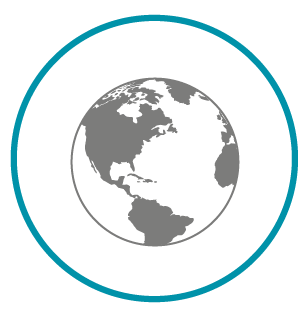

LA CONSIGNE DU RÉEMPLOI DU VERRE.
POURQUOI REEMPLOYER NOS CONTENANTS EN VERRE ?

Pour réduire notre impact environnemental

Pour favoriser les acteurs économiques du territoire

Pour faire des économies
Votre expérience de la consigne
Etude du terrain
Vous connaissez un ou des producteurs de la région Rhône Alpes qui pratiquent la consigne sur les emballages de leur produits (boissons, ou denrées alimentaires) ?
Faites-les nous connaître via ce formulaire !
FORMULAIRE
Adressé aux citoyens
Vous voulez nous rejoindre ?
Vous avez envie de participer à la construction du projet ?
De mettre du temps et/ou des compétences à contribution ?
Contactez-nous sans tarder !